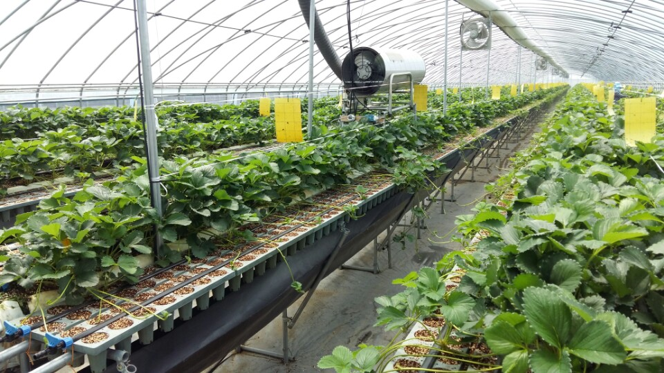
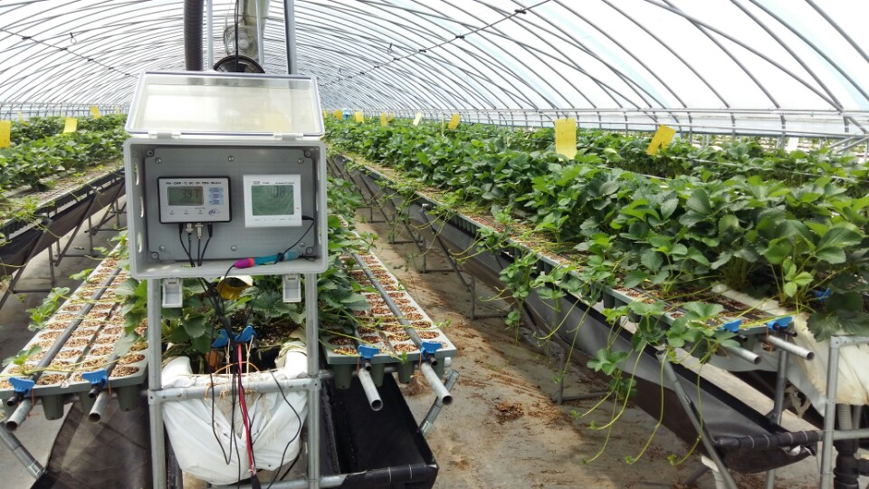

딸기
논산 지경리 딸기 농장은 상월 농협 공동선별 출하회 소속으로 12월~3월에 천안시, 서울시 학교 급식에 납품하고, 롯데마트와 홈플러스에 납품을 하기에 품질에 대해 믿고 먹을 수 있습니다.
딸기 농사를 할 때 클로렐라를 살포해 딸기의 면역력을 높이고, 친환경 무농약 재배
를 합니다.

딸기잼
직접 잼 가공 교육을 받아 논산시 교육 기술 센터의 가공실을 이용해 딸기잼을 만듦니다. 딸기잼을 60도에서 가공을 해 영양소 파괴가 없고, 잼이 투명합니다.

육묘
육묘는 연간 28만주를 판매하고 있으며, 재배 면적은 100m*8.2m이고, 5동으로 운영되고 있습니다. 포트육묘의 장점 1) 꽃눈분화의 촉진 포트육묘방법을 이용하면 한정된 포트 내에서 근권 제한과 양분 흡수를 효율적으로 제어할 수 있어 꽃눈분화를 촉진시키는데 유리합니다.
